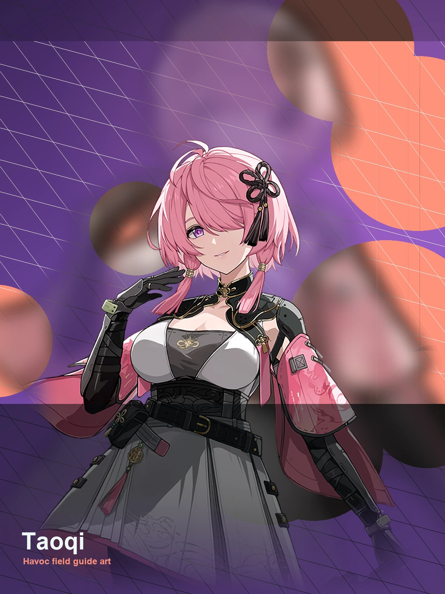
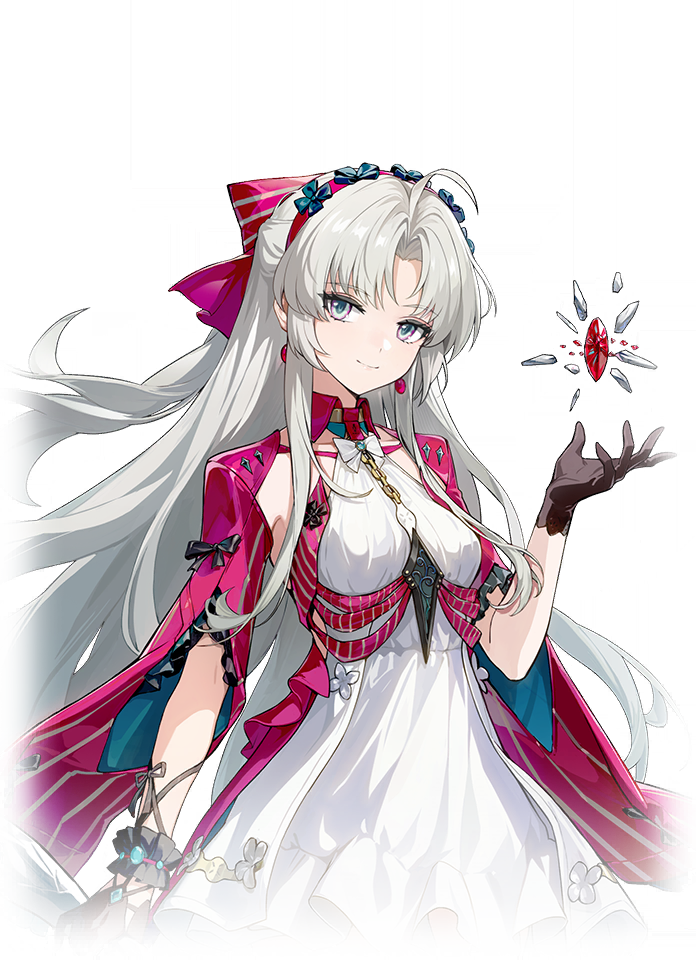
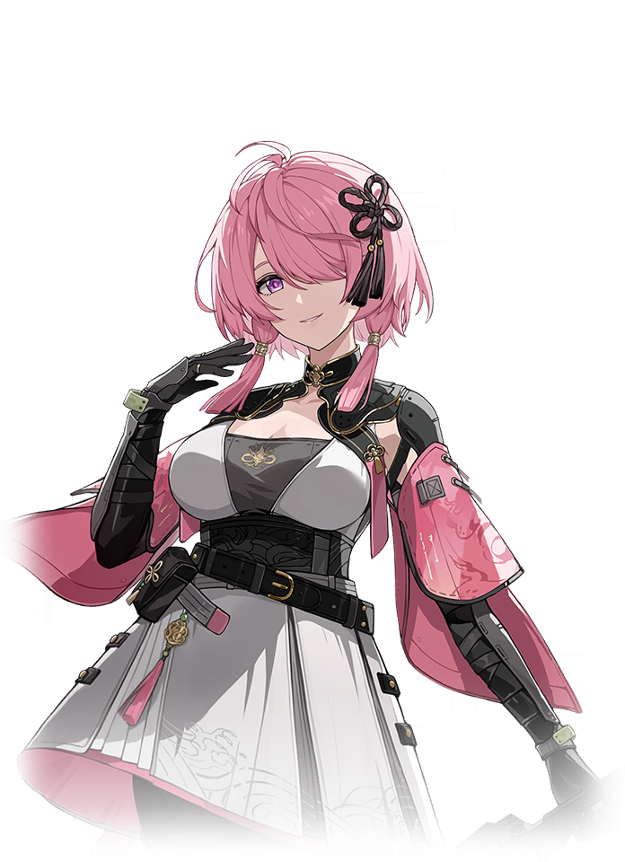
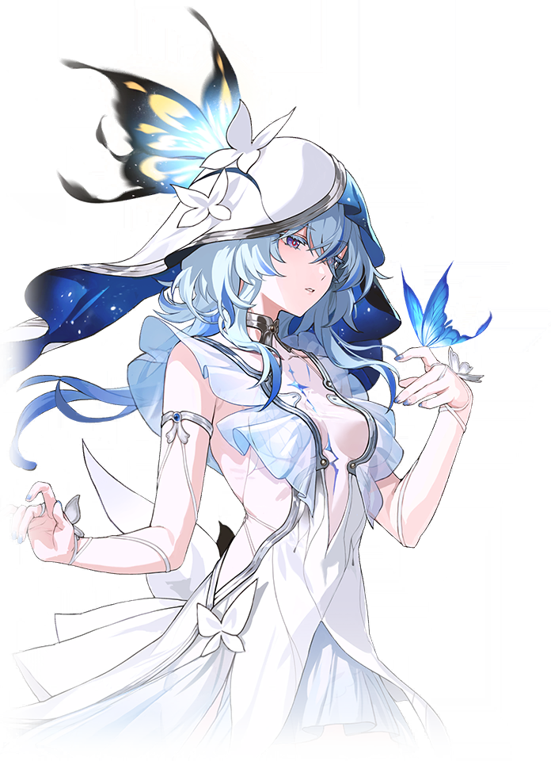
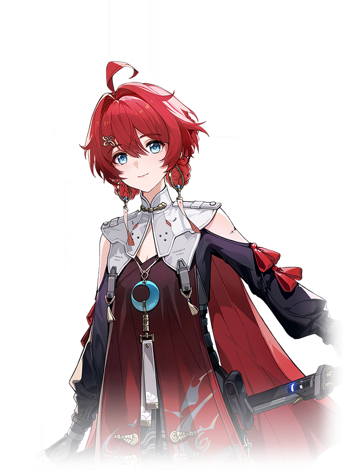
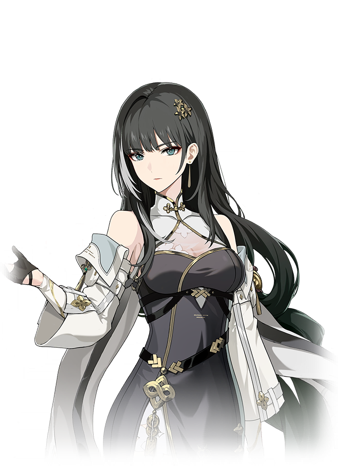

Wuthering Waves Resonator guide
Taoqi build, teams, weapons, and Echoes
Defensive support for safer teams.
Personal notes
Optional profile-aware info that keeps the main guide unchanged.
No profile connected on this browser yet.
Log in above to load an existing WaveKit profile, or use the team helper to mark your Resonators and weapons for Taoqi.
Skill priority
Team compositions

Main damageCarlottaLeads the damage plan
Setup helperTaoqiSets up the damage dealer
Support slotShorekeeperCompletes the teamTaoqi supports Carlotta alongside Shorekeeper. Carlotta wants Skill-focused support; Taoqi and Lumi are valid alternatives because the buff type matters.

Main damageDanjinLeads the damage planSetup helperTaoqiSets up the damage dealer
Support slotBaizhiCompletes the teamTaoqi supports Danjin alongside Baizhi. Danjin needs the site to protect players from stress: damage is high, safety matters.
Use these grouped options to understand the wider roster around the complete teams above.
These characters appear in reviewed teams, but every possible combination is not guaranteed. Use the complete teams above as the safest starting point.
New player reading guide
If you are only checking Taoqi before building a profile, start by confirming their role, weapon type, Sonata, and whether they need a real healer or a specific helper.
Taoqi guide overview
Taoqi is a Havoc Defensive Support in Wuthering Waves. Its recommended build starts with Discord, while its Echo plan uses Rejuvenating Glow. The guide also covers stat priorities, compatible teammates, and a practical rotation.
Quick build
- Role
- Defensive support
- Team type
- Shield
- Best weapon
- Discord
- Alternate weapons
- Dauntless Evernight
- Sonata
- Rejuvenating Glow
- Echo cost
- 4-3-3-1-1
- Main Echo
- Bell-Borne Geochelone
- Main stats
- DEF% / Energy Regen or Havoc DMG / DEF%
Stat priority
- Priority 1: Energy Regen for reliable Liberation and Outro access
- Priority 2: CRIT Rate and CRIT DMG if building damage
- Priority 3: DEF% for shield and damage scaling
- Priority 4: Flat DEF
Resonance Chain overview
Each Resonance Chain level comes from duplicate copies of this Resonator. Expand a level for the exact in-game effect and use the short line for a quick read.
Chain effects
R1Essense of TranquilityForte Circuit Power Shift's Shield is increased by 40%.+
Forte Circuit Power Shift's Shield is increased by 40%.
R2Silent StrengthThe Crit.…+
The Crit. Rate and Crit. DMG of Resonance Liberation Unmovable is increased by 20% and 20%, respectively.
R3Keen-eyed ObserverThe duration of Resonance Skill Rocksteady Shield is extended to 30s.+
The duration of Resonance Skill Rocksteady Shield is extended to 30s.
R4Heavylifting DutyWhen Taoqi successfully triggers Heavy Attack Strategic Parry, she restores 25% HP and increases her DEF by 50% for 5s.…+
When Taoqi successfully triggers Heavy Attack Strategic Parry, she restores 25% HP and increases her DEF by 50% for 5s. This can be triggered once every 15s.
R5Benevolent GuardianThe damage of Forte Circuit Power Shift is increased by 50%.…+
The damage of Forte Circuit Power Shift is increased by 50%. When Forte Circuit Power Shift hits a target, restore 20 Resonance Energy.
R6Defender of PeaceThe damage of Taoqi's Basic Attack and Heavy Attack is increased by 40% while the Shield granted by Resonance Skill Rocksteady Shield holds.+
The damage of Taoqi's Basic Attack and Heavy Attack is increased by 40% while the Shield granted by Resonance Skill Rocksteady Shield holds.
Effect names, numbers, and conditions follow current public game-data records. WaveKit keeps the full wording available so important conditions are not lost in a tier label.
Simple play pattern
- Use Taoqi to make the team safer before difficult enemy strings.
- Treat defensive uptime as the main value, not only personal damage.
- Pair with a stronger carry when possible.
Build priority
- Difficulty
- Low stress
- Safety
- Defensive comfort
- Data note
- Guide checked
Taoqi is most valuable when their buff, element, or mechanic matches the carry you want to build.
Taoqi FAQ
What is the best Taoqi build in Wuthering Waves?
Taoqi's recommended WaveKit setup is Tank Sub-DPS Build, using Discord, Rejuvenating Glow, and Bell-Borne Geochelone as the main Echo target.
What stats should Taoqi use?
Start with DEF% / Energy Regen or Havoc DMG / DEF%. If the rotation feels uncomfortable, improve Energy Regen or defensive comfort before chasing perfect substats.
What teams work with Taoqi?
Taoqi is flexible, so the best team depends on the Resonators and weapons you own.
Is Taoqi beginner friendly?
Taoqi's current difficulty is listed as Low stress. If you are learning, pair them with safer sustain or defensive support.